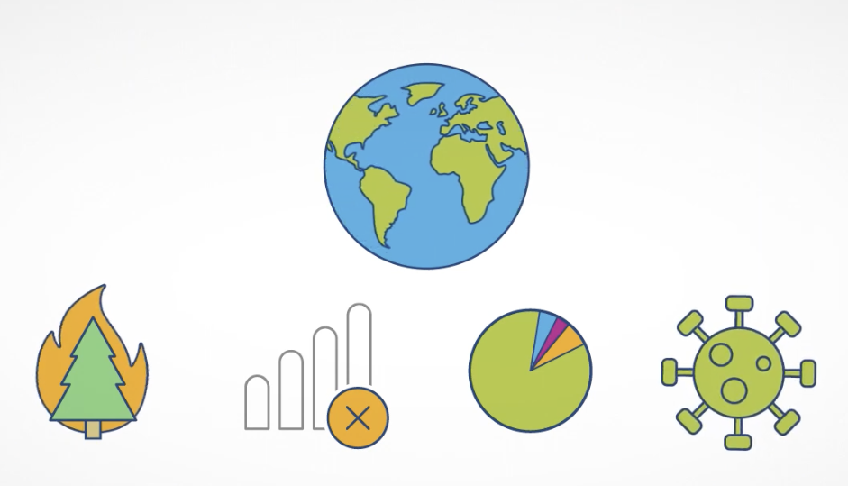

1968
Intel Founded
Intel is founded by Robert Noyce and Gordon Moore.
The company began with a focus on innovation in semiconductor technology, which later helped shape the future of computing.
Sustainability Timeline
Explore key milestones in Intel’s commitment to renewable energy, water conservation, waste reduction, and lower greenhouse gas emissions.
Intel is working to reduce its environmental impact while continuing to support innovation around the world. This timeline highlights major sustainability goals and actions connected to climate, energy, water, waste, and product efficiency.
Scroll sideways on desktop or swipe on mobile to explore Intel’s history and sustainability milestones. Select or hover over each card to reveal more details.
Intel is founded by Robert Noyce and Gordon Moore.
The company began with a focus on innovation in semiconductor technology, which later helped shape the future of computing.

Intel introduces the Intel 4004, the first commercially available microprocessor.
The 4004 helped make computing smaller and more practical by placing processing power onto a single chip.

Intel introduces the 8086 processor, an important step in the development of x86 architecture.
The 8086 became one of Intel’s most influential processors and helped lay the foundation for many future personal computers.

Intel identifies 2006 as a peak year for greenhouse gas emissions from its operations.
This milestone helps show why reducing emissions became an important part of Intel’s long-term sustainability strategy.

Intel expands its focus on responsibility, inclusion, sustainability, and enabling impact.
This strategy connects Intel’s business goals with environmental and social responsibility, helping guide long-term sustainability actions.

Intel announces a goal to reach net-zero greenhouse gas emissions in global operations by 2040.
This focuses on Scope 1 and Scope 2 emissions, meaning emissions from Intel’s own operations and purchased energy.

Intel aims to use 100% renewable electricity across global operations.
Renewable electricity helps reduce the environmental footprint of Intel’s manufacturing and office operations.

Intel works toward conserving water and supporting restoration projects.
The goal is to restore more water than the company consumes, especially in areas where water resources are limited.

Intel aims to send zero waste to landfills across its operations.
This goal encourages recycling, reuse, and smarter manufacturing practices that reduce unnecessary waste.

Intel aims to improve the energy efficiency of client and server microprocessors.
More efficient chips can help reduce energy use in devices, data centers, and other technology systems.

Intel targets net-zero greenhouse gas emissions across global operations.
This milestone represents a long-term commitment to reducing climate impact through energy efficiency, renewable energy, and innovation.